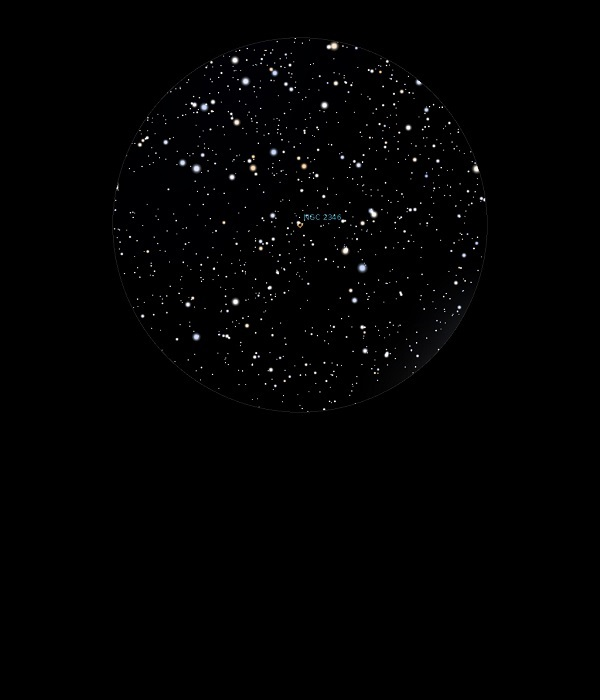

NGC 2346
Planetary
Nebula in Monoceros
NGC 2346
Mag 12.5
08/01/15
Very small and faint
Planetary Nebula
Not visible in
25mm but with a UHC filter in 12mm it appears as a tight hazy patch although
no structure visible
Quite
easy to locate it's position, in the same 25mm
FOV as the 4th Mag star Delta Mon,
HIP 34769
24/01/15
Very faint and like an out of focus star in 12mm
Better definition With UHC filter but no real
shape